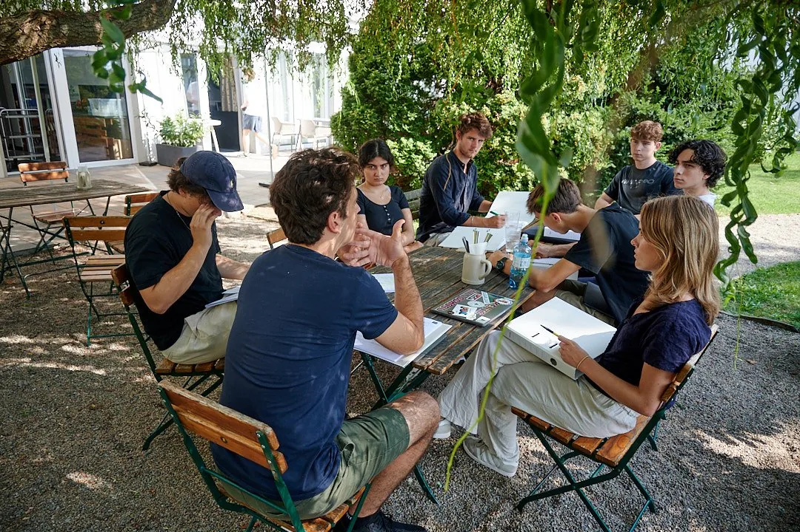
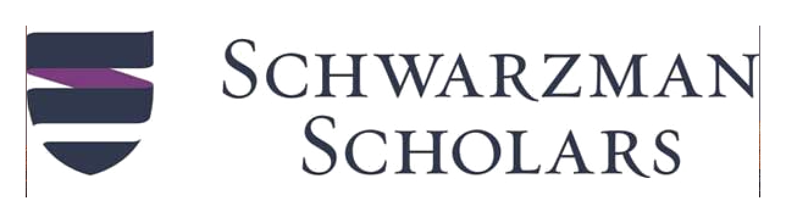
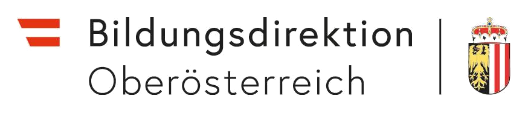
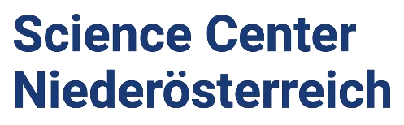

Partner:innen & Schulen
Gemeinsam halten Partner:innen unsere Angebote kostenlos.
Project Access Austria arbeitet mit Schulen, Universitäten, Unternehmen, Stiftungen und privaten Unterstützer:innen zusammen. Partner:innen ermöglichen Förderung, Expertise und Reichweite. Schulen helfen vor allem dabei, Schüler:innen direkt über unsere kostenlosen Angebote, das Mentoring und das Bootcamp zu informieren.

Warum Partnerschaften
Bildungschancen entstehen durch viele Hände.
Studienberatung für internationale Bewerbungen kostet privat oft mehrere tausend Euro. Project Access Austria stellt vergleichbare Beratung kostenlos bereit, mit Studierenden und Alumni internationaler Universitäten, einem jährlichen Bewerbungs-Bootcamp und kurzen Schulbesuchen in ganz Österreich. Möglich ist das durch Sponsoring, Netzwerkzugänge und Schulen, die uns Informationsbesuche ermöglichen. Eine Partnerschaft ist eine konkrete Form, Bildungsgerechtigkeit zu unterstützen.
Unsere Reichweite
Wen wir gemeinsam erreichen.
Formen der Unterstützung
Wie Partner:innen beitragen.
Förderung
Bootcamp, Mentoring und Reichweite finanzieren.
Sponsoring trägt Unterkunft, Verpflegung, Materialien und Reisekosten. So können Bewerber:innen unabhängig vom Familienbudget teilnehmen.
Expertise
Einblicke aus Studium und Praxis.
Mentor:innen, Alumni und ausgewählte Fachleute teilen punktuell Erfahrung, etwa beim Bootcamp, in Q&As oder über Kontakte zu Hochschulen und Stipendienprogrammen.
Räume
Räume für ausgewählte Formate.
Universitäten, Unternehmen und andere Partner können für einzelne Veranstaltungen Räume oder organisatorische Unterstützung beitragen. Schulkooperationen bestehen meist aus kurzen Informationsbesuchen vor Ort.
Reichweite
Zugang zu Schulen, Alumni und Förder:innen.
Ein gemeinsames Netzwerk bringt unsere kostenlosen Angebote schneller zu Bewerber:innen, die sie noch nicht kennen.
Mit uns gearbeitet
Partner aus Bildung, Wirtschaft und Verwaltung.
Einige unserer Partner:
-

-

-

-

Stimme aus dem Partnerkreis
Wir bei McKinsey sind fest davon überzeugt, dass vielfältigere Teams bessere Ergebnisse erzielen. Neben Geschlecht und ethnischer Herkunft ist der sozioökonomische Hintergrund eine zentrale Dimension, entlang derer wir als Unternehmen jeden Tag daran arbeiten, vielfältiger und inklusiver zu werden. Es ist uns eine Freude, eine Organisation wie Project Access zu unterstützen, die sicherstellt, dass nur Talent und Leidenschaft den Bildungsweg eines Menschen bestimmen, nicht der sozioökonomische Hintergrund.
Schulpartnerschaften
Kurze Info-Besuche für Schulen.
Viele Schüler:innen erfahren erst spät, dass es kostenlose Unterstützung für Bewerbungen an internationale Universitäten gibt. In einer Schulkooperation kommt Project Access Austria an die Schule, stellt die Angebote kurz vor und erklärt, wie Mentoring und Bootcamp helfen können.
- Kurzbesuch in Klasse, Infoveranstaltung oder kleiner Gruppe.
- Überblick zu Project Access, Mentoring und Bootcamp.
- Zeit für Fragen und einfache Infos zum Weitergeben.

Kontakt
Schreiben Sie uns.
Für Sponsoring, Schulbesuche oder andere Kooperationen erreichen Sie uns per E-Mail. Wir melden uns mit einem konkreten nächsten Schritt.